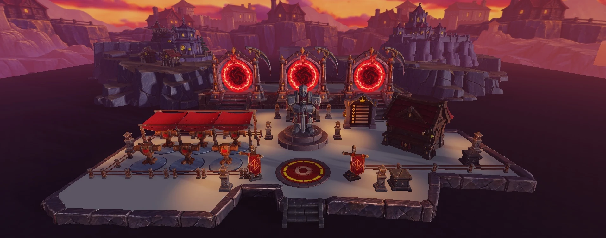
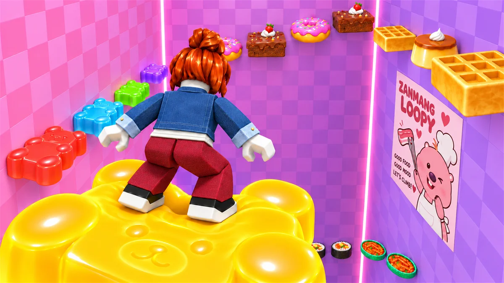
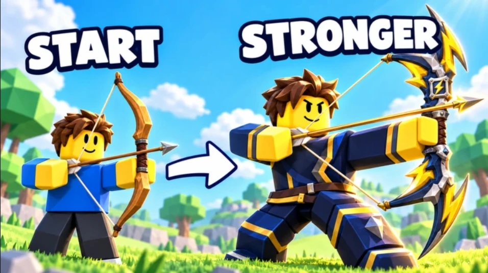

2026년 11월 진행 중인 프로젝트



Enchant a Weapon
게임 장르
AD&D 룰 기반 무기 제작·강화 RPG주요 타깃
연령: 10~18세 성별: 남성 중심핵심 재미
재료를 모아 무기를 만들고, +10 강화에 도전해 UGC를 얻는 성취감
Hunt a Slime
게임 장르
슬라임 사냥 액션 RPG주요 타깃
연령: 10~18세 성별: 남성 중심핵심 재미
슬라임 무리 사냥, 전리품 파밍과 장비·스킬 조합, 보스 도전
ASMR UGC Town
게임 장르
캐주얼 Obby · ASMR · 수집주요 타깃
연령: 8~12세 성별: 여성 중심핵심 재미
장애물을 넘는 소리·반응의 쾌감과 모은 재료를 UGC로 바꾸는 보상